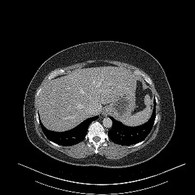
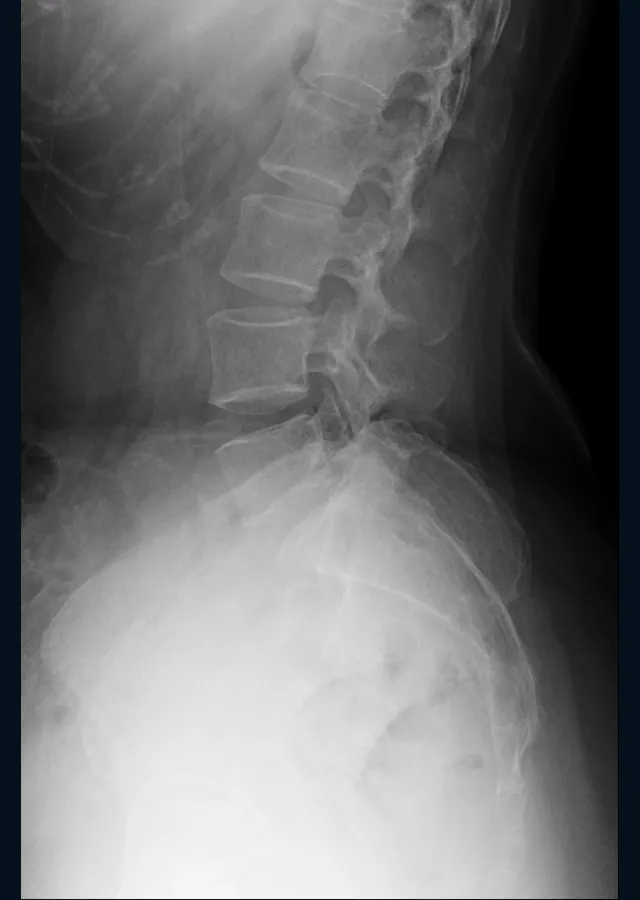
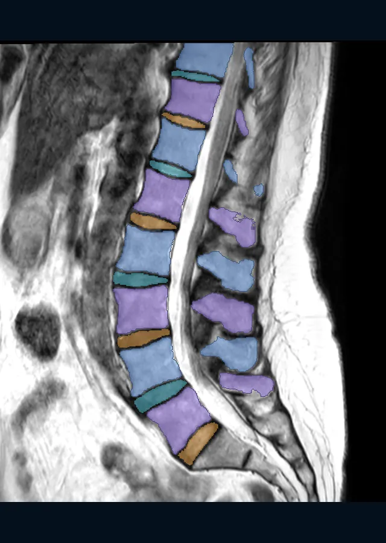

Free to use, with the code on GitHub.
Explore a real scan in your browser.
Step through a sample CT with its organs and bones outlined and named by a research model. Or open your own CT, MRI or X-ray: it stays on this device.
Try the sample scan Open your scan
Your scan can be DICOM files on a disc, in a folder or in a ZIP.
It's made for education and research, and it is not a medical device. Personal use and research are free, and companies buy a licence.
The teal band marks the sample CT's slice on this reference skeleton. Drag sideways to turn it, and tap a bone to see its name.

Sample CT from TotalSegmentator (CC BY 4.0). Outlines by the CT organ outliner, one of our research models. 3D skeleton from BodyParts3D, © The Database Center for Life Science, CC BY 4.0, with parts merged and simplified by LunarWerx.
Checked on scans the models never trained on.
115
body structures outlined on CT
Checked on 89 CT scans kept out of training. Each structure is in at least 10 of them.
25,596
chest X-rays used for testing
NIH's official test list. None were used in training.
4,067
children's wrist X-rays used for testing
From the GRAZPEDWRI-DX test set. Only pictures with a clear label are counted.
Scans we cover
X-ray, CT, MRI and mammogram.
Each kind opens in the viewer, and each has research models trained on public data.
-

Chest 
Wrist 
Spine X-ray
Open one picture or a whole set, then zoom in and adjust the brightness.
-

Organs 
Lungs CT
Step through every slice, with zoom and a brightness window. A 3D view shows the organs and bones as coloured shapes.
Research models
-

Lower spine MRI
Spine MRI slices open the same way, with zoom and brightness. In this example, each disc and vertebra has its own colour.
Research models
-

One view Mammogram
It opens like any other X-ray, with zoom and brightness.
Research models
These pictures come from public datasets under CC BY and similar licences. Picture credits
Research results
One result from each research model.
Research results on public test data. They say nothing about your scan.
X-rayChest X-ray research model
Tested on 25,596 pictures it never saw
Scores one chest X-ray for 14 kinds of label from a public dataset.
Held-out testCTCT organ outliner
Tested on 89 scans it never saw
Outlines 115 body structures on CT and names each one.
Held-out testMRIDisc grading research model (MRI)
Tested on 44 patients it never saw
Grades the discs of a spine MRI on a public five-step scale.
Held-out testX-rayFracture research model (X-ray)
Tested on 4,067 pictures it never saw
Scores a child's wrist X-ray for a fracture label from a public dataset.
Held-out testCTLung nodule research model (CT)
Measured on 888 scans
Marks small lung nodules on CT.
DevelopmentMammogramMammogram research model
Measured on 3,744 pictures
Scores one mammogram picture as benign or malignant against a public dataset.
DevelopmentX-rayLumbar spine X-ray corner reader
Measured on 2,000 patients
Marks the corners of the lower back's vertebrae on a side-view spine X-ray.
Development- Held-out test
- data the model never saw while it was trained
- Development
- data used while the model was built
The training log
We write down every run.
Kept or dropped, each result goes in the log with the version of the code that made it.
1,615
runs recorded
382
hours of recorded runs
74
ideas tried
newest entry
Pricing
Free for you, paid for companies.
Personal use, charities, schools, universities and public research are free under the licence.
-
Free
Free viewer and licence
$0
It runs on your device, so it costs us nothing.
-
Pay what you want
Supporter licence
From $3
Pay once from $3, or monthly from $5. The app stays free.
-
Paid
Commercial licence
From $1,500 a year
Companies building products or internal tools start with a free 60-day evaluation.
Not for diagnosis or treatment. Not cleared by the FDA or any regulator.
Why back this
What your support builds on.
What we've built so far, and who we are.
7
research models
For X-ray, CT, MRI and mammograms, each with a public model card.
54
structures named on the sample CT
Open the sample and tap an outline to see its name.
- Who builds it
- We're LunarWerx LLC, a for-profit company. The code and the model cards are public.
- What's next
- We plan to train bigger research models on rented computer time.
- How we keep track
- Every training run goes in the log above, with its hours and its date.
Support the research
Help train bigger research models.
Your support pays for the computer time that trains our research models. So far we've trained them on one graphics card at home. Renting a data-centre GPU, the A100 80GB, costs $1.59 an hour.
Investing or partnering? Talk to us
See all support options See pricing
Payments are not tax-deductible, because LunarWerx LLC is a for-profit company.
Privacy
Your scan stays on your device.
Nothing is uploaded when you open a scan. Your browser reads the pictures on this device, and they're gone when you close the tab. If you ever donate a scan to the research, you see everything first, and your browser removes anything that could identify you.
Picture credits
- CT, organs and bones coloured. TotalSegmentator dataset v2.0.1, CC BY 4.0. Source. Windowed (width 400, level 40), cropped and coloured by LunarWerx, using the dataset's own masks.
- MRI of the lumbar spine, vertebrae and discs coloured. SPIDER lumbar spine MRI, CC BY 4.0. Source. Middle sagittal slice, contrast stretched, cropped and coloured by LunarWerx, using the dataset's own masks.
- X-ray of a child's wrist. GRAZPEDWRI-DX v2, CC BY 4.0. Source. 16-bit picture contrast stretched, cropped and resized by LunarWerx.
- Chest X-ray. NIH ChestX-ray14, No restrictions (NIH), attribution requested. Source. Contrast stretched, cropped and resized by LunarWerx.
- CT of the chest, lung window. LIDC-IDRI, CC BY 3.0. Source. Windowed (width 1500, level -600), cropped and resized by LunarWerx.
- Mammogram. CMMD (Chinese Mammography Database), CC BY 4.0. Source. Contrast stretched, cropped and resized by LunarWerx.
- Side X-ray of the lower spine. Spondylolisthesis Vertebral Landmark Dataset v1 (Reyes, VSB-TU Ostrava), CC BY 4.0. Source. Contrast stretched, cropped and resized by LunarWerx.